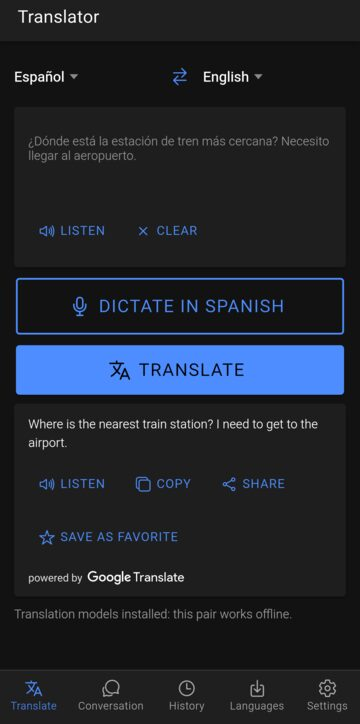
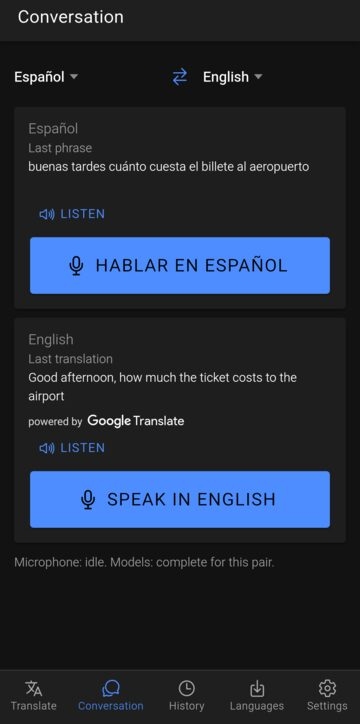
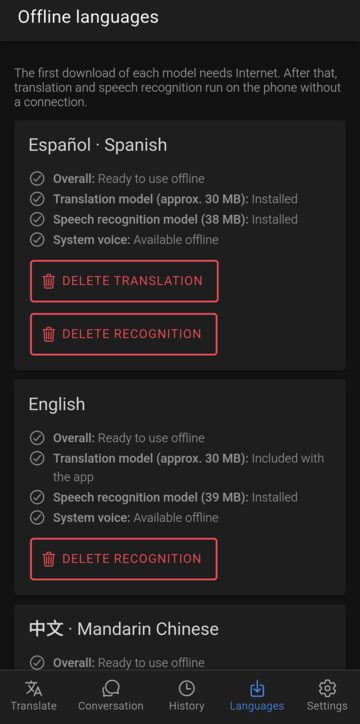
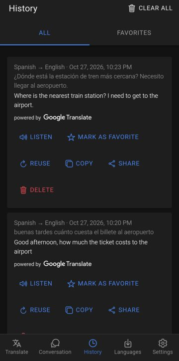
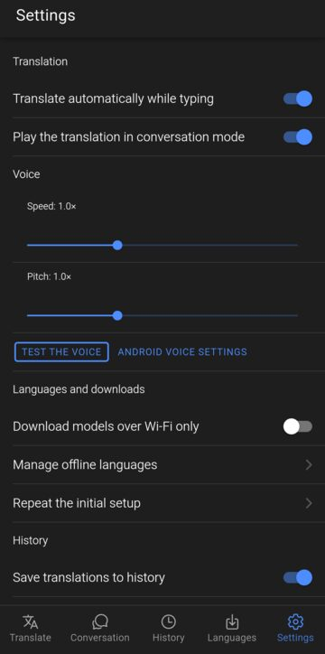

Android application · technical demonstration
Babel Translator Offline speech & text translation
An Android app that translates typed text and spoken conversations between Spanish, English and Mandarin Chinese. Translation, speech recognition and speech synthesis all run on the device: after the language models are downloaded once, the app works in airplane mode.
Version 1.1.0 · 49.8 MB · Android 7.0 or later · No account required

Technical capabilities
What this project demonstrates, as implemented in the shipped version.
-
On-device machine translation
Google ML Kit on-device translation between three languages in all six directions, with no translation API, server or key. Multi-line text is translated line by line to keep its structure.
-
Offline speech recognition
Vosk speech-to-text running on the phone with live partial results, a pause-tolerant dictation mode and a continuous mode for conversations. Audio is processed in memory and never stored.
-
Two-person conversation mode
Each speaker taps their language once and keeps talking; every sentence is recognized, translated and read aloud. The microphone pauses during playback so the phone does not transcribe itself.
-
Downloadable model manager
Resumable HTTPS downloads with progress, exact-size validation, ZIP extraction that rejects paths outside the target folder, and a model is marked installed only after the whole process succeeds.
-
Native Android integration
Three Kotlin Capacitor plugins wrap ML Kit, Vosk and the Android TextToSpeech engine behind TypeScript service interfaces, so each engine can be replaced without touching the UI.
-
Local-first data
History and favorites are stored on the device and excluded from Android backup. The interface switches between English and Spanish following the phone's language.
Screenshots
Captured from the app running on an Android 15 phone. Tap an image to enlarge it.
-
Text translation, Spanish → English -

Conversation mode: recognized speech and its translation -

Offline languages: model and voice status per language -

Local history and favorites -

Settings: voice speed and pitch, Wi-Fi-only downloads


How to test the application
The app is distributed as an APK file for evaluation. Android asks for confirmation before installing apps from outside an app store; this is a normal step and no security setting needs to be turned off.
- Download the APK On an Android phone, tap Download Android APK above (49.8 MB).
- Install it Open the downloaded file. Android may ask you to allow your browser or file manager to install apps; follow its prompts.
- Prepare the languages On first launch, choose at least two languages and download their models (about 70 MB each). This is the only step that needs Internet.
Suggested demonstration
- Complete the initial setup with Spanish and English and wait for “Ready to use offline”.
- Turn on airplane mode.
- On Translate, type a sentence and tap Listen on the translation.
- Tap Dictate, say a sentence, and check the recognized text before translating it.
- Open Conversation, tap Speak in English, say two or three sentences with short pauses and listen to each translation. Then tap Hablar en español to answer.
- Open History to see the saved turns.
Technical architecture
A React and Ionic interface running in Capacitor, with the heavy work done in native Kotlin code.
- Interface
- React 19, TypeScript, Ionic 9, running inside Capacitor 8.
- Service layer
- TypeScript interfaces for translation, speech recognition, speech synthesis and model management. Screens never call native code directly.
- Native layer
- Three Kotlin Capacitor plugins: ML Kit Translate 17.0.3, Vosk Android 0.3.75, Android TextToSpeech.
- Models
- ML Kit translation models (downloaded by ML Kit, English built in) and Vosk “small” models for Spanish, English and Chinese (Apache 2.0), downloaded on demand into private app storage.
- Storage
- History, favorites and settings in local app storage; no backend and no account.
- Testing
- 50 TypeScript unit tests and 8 JVM tests for the model installer, plus manual tests on a phone.
Technical notes
- Version
- 1.1.0 (version code 2)
- Package
com.traductor.offline- Android
- 7.0 (API 24) or later; targets API 36.
- CPU
- ARM devices (arm64-v8a, armeabi-v7a). x86 emulators are not supported by this build.
- Internet
- Only to download the language models. Translating, dictating and conversation work offline. When online, Google ML Kit sends Google technical usage and diagnostic data (not the translated text).
- Hardware
- A microphone for dictation and conversation; no other hardware.
- Permissions
- Microphone (requested on first voice use), Internet and network state.
- Voices
- Read-aloud uses the voices installed in the phone's text-to-speech engine.
- APK size
- 52,243,419 bytes (49.8 MB)
- SHA-256
7e4645dc6a50a0f4f8e166af3c4177c906a319ebb34969d5645a8de49d900f87- Signing certificate
-
05:92:BA:70:3E:EF:13:CA:AE:3B:A9:BA:B7:C7:F2:2F:F8:D9:B6:D0:14:6E:6F:D9:08:EC:A7:36:60:30:32:1E
Provided for technical evaluation. The APK is signed by the developer and has not been independently security-audited. Translation and speech recognition are automatic and can make mistakes, especially with background noise, proper names or long sentences; small offline models trade some accuracy for size. The app is not distributed through an app store and does not update itself.